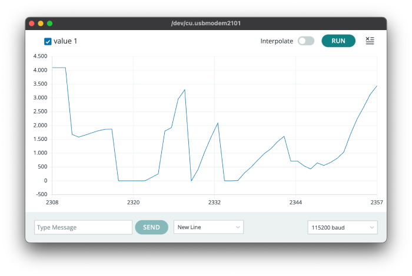

<div class="textcontainer">
<p class="margin"> </p>
<h3>Week 6: Electronic Inputs</h3>
<h4>In my input assignment, I first thought of using a light sensor that would tell how bright the room is. However, I couldn't find one, so I decided to use a gas sensor, hoping I could get some interesting results. When I got it working, I saw that it only read 4095, so I changed it too. My last option was a piezo sensor. It worked this time, with min. value being 0 and the max value being 4095. When I squeeze the sensor the value goes down to 0. <h4>

<h4>I believe this could also be used while gathering aerodynamic data.</h4>
</div>